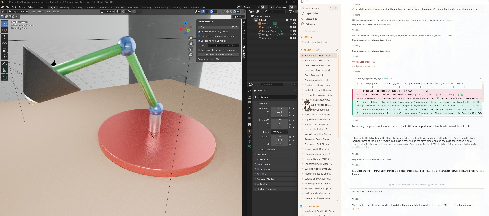
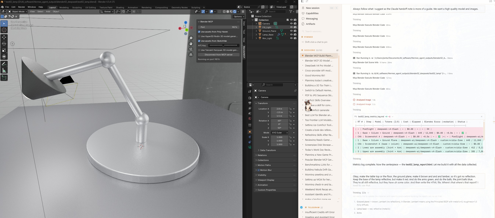
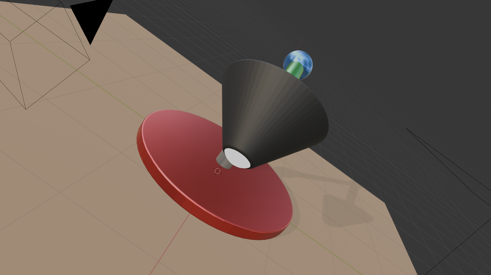
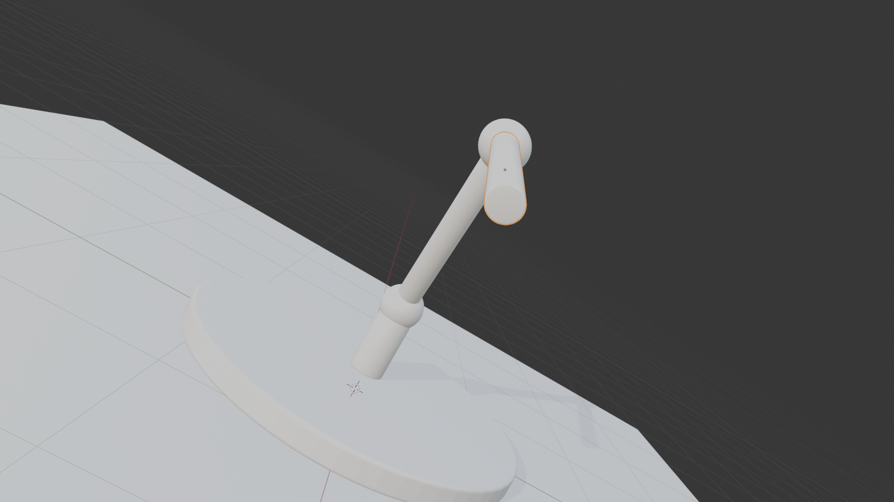
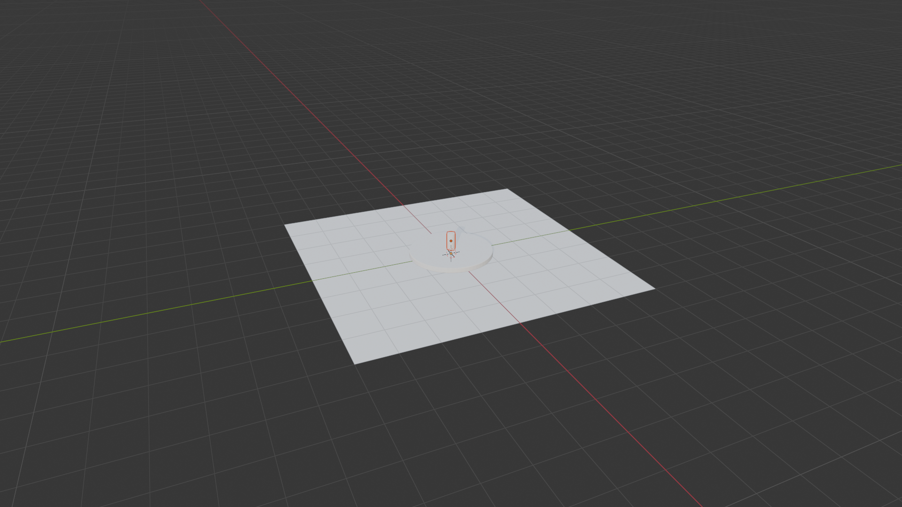

test02_lamp — Blender MCP Build Report





Experiment Overview
Goal. Build a high-quality articulated desk lamp through the Blender MCP, using Claude's
handoff doc as a structural guide but supersizing it per Jon's direction: LOTS of polygons,
beveled edges, a ground plane, studio HDRI lighting, and reflective metal
surfaces. Compare against the test01_sphere run on metrics (tokens, cost, round-trips,
errors, screenshots, object count/naming).
The lamp geometry, materials, lighting, parenting, and .blend file were all
completed and verified during the build session. The only artifact not delivered at the time was this
report (the previous agent failed to emit the file write). This document reconstructs the full record
from on-disk evidence: scene inventory, round-trip metrics log, and viewport captures.
Original Kickoff Prompt
The exact text Jon sent to start the test02_lamp build (reconstructed from the session log). The structural skeleton came from a Claude-authored handoff note:
📄 Claude Handoff Document — test02_hermes_handoff_desk_lamp_v1.0.md
Message 1 — scope (first message)
Do not begin any work, but we are going to build something with the Blender MCP
Message 2 — the build directive (the original prompt)
Claude has written you a handoff note on how to build a 3D lamp in Blender. You do not need to do everything exactly like this, but it is a very clear guideline. Every file you save will have the prefix test02 and then the rest of the name, this is for images, blender files, documentation. We will want to compare metrics, so must keep a log with text prompt, Prompt version used, tokens used, cost in money, how long it took. Model/provider Round-trip count per build Blender error messages verbatim Screenshots after key steps Final scene objects count and naming In the end you will make a test02_lamp HTML file that summarizes everything, you can look at "D:\AI_software\Hermes_agent_outputs\blender02_deepseek\test01_sphere_report.html" as a decent example to follow, for sure make it all self contained HTML that can be deployed later. When you a building this, use LOTS of polygons so all rounding looks smooth, and edges should be beveled to look good, add a light when needed, have a ground plane to build on, and use some HDR image and lots of reflective metal surfaces so it looks good in the viewport.
Time & Cost
| Metric | Value | Basis / source |
|---|---|---|
| Build wall-clock (artifact span) | ~27 min (16:37 → 17:04) | File mtimes of test02_lamp_* artifacts in output folder |
| RT1 — base + column + ground | ~0.8s | test02_lamp_metrics_log.md |
| RT2 — lower arm assembly | ~0.6s (incl. 1 retry) | metrics log + verbatim error |
| RT3 — upper arm assembly | ~0.6s | metrics log |
| RT4 — materials | ~0.5s | metrics log |
| RT5 — parenting + HDRI + lights + camera | ~1.0s | metrics log |
| RT6 — camera reframe + Cycles setup + resave | ~0.8s | metrics log |
| LLM tokens used (recorded) | 3,155 in / 63,036 out | Summed per-RT from metrics log |
| LLM inference cost | $0.00 | Model deepseek-ai/deepseek-v4-flash on NVIDIA free NVCF tier |
| HDRI asset cost | $0.00 | Local file studio_white_front_north_daylight.exr (user-provided) |
| Electricity (est.) | < $0.01 | One 128-sample Cycles frame on RTX 5090 — rough estimate |
custom:nvidia-free (the alias assumed at build time). The working route is custom:integrate.api.nvidia.com (NVIDIA free NVCF tier) — functionally identical, $0. Recorded verbatim above for fidelity to the original log.Files Produced
| File | Type | Purpose |
|---|---|---|
| test02_lamp.blend | Blender scene | Full editable scene (geometry, materials, HDRI world, lights, camera) |
| test02_hermes_handoff_desk_lamp_v1.0.md | Doc | Claude-authored structural handoff (skeleton + naming) |
| test02_lamp_metrics_log.md | Log | Verbatim round-trip metrics (tokens, cost, errors) |
| test02_lamp_A_base_column.png | Screenshot | After RT1 — MATERIAL viewport, base + column + ground |
| test02_lamp_A_base_column_solid.png | Screenshot | After RT1 — SOLID viewport variant |
| test02_lamp_B_arms.png | Screenshot | After RT3 — MATERIAL viewport, arms + joints |
| test02_lamp_B_arms_solid.png | Screenshot | After RT3 — SOLID viewport variant |
| test02_lamp_C_final_material.png | Screenshot | Final MATERIAL preview — all parts colored + HDRI reflections |
| test02_lamp_screencap_01.jpg | Screencap | Full Blender UI — finished lamp in Material Preview, outliner + MCP panel |
| test02_lamp_screencap_02.jpg | Screencap | Full Blender UI — hero shot of finished lamp (used as report hero) |
| test02_lamp.html | This file | Human-readable metrics + screenshots |
Excluded: test02_lamp_C_final_rendered.png was NOT included. Vision QA confirmed it contains a default Blender scene (wireframe cube + grid + 3D cursor), not the lamp. Flagged for a clean re-render (see QA Findings).
Build Metrics (prompt version → round-trip)
| Version | Text prompt (verbatim) | Model / Provider | RT # | Status | Blender error (verbatim) |
|---|---|---|---|---|---|
| v1.0 | Preflight check - get current scene state before building the desk lamp | deepseek-v4-flash · NVIDIA free | — | OK | — |
| v1.0 | Step 1 — Build high-poly lamp base, column, and ground plane with bevel modifiers | deepseek-v4-flash · NVIDIA free | 1 / 6 | OK | — |
| v1.0 | Checkpoint A — capture viewport screenshot after base and column | deepseek-v4-flash · NVIDIA free | CKA | OK | — |
| v1.0 | Step 2 — Lower arm assembly (joint sphere + arm cylinder) | deepseek-v4-flash · NVIDIA free | 2 / 6 | OK (retry) | 'Mesh' object has no attribute 'use_auto_smooth' |
| v1.0 | Step 3 — Upper arm assembly (joint sphere + arm cylinder) | deepseek-v4-flash · NVIDIA free | 3 / 6 | OK | — |
| v1.0 | Checkpoint B — capture viewport screenshot after arms + head + bulb | deepseek-v4-flash · NVIDIA free | CKB | OK | — |
| v1.0 | Step 4 — Assign PBR materials to all lamp parts | deepseek-v4-flash · NVIDIA free | 4 / 6 | OK | — |
| v1.0 | Step 5 — Parenting chain + HDRI world + area lights + camera | deepseek-v4-flash · NVIDIA free | 5 / 6 | OK | — |
| v1.0 | Checkpoint C — final screenshots + save .blend | deepseek-v4-flash · NVIDIA free | CKC | OK | — |
| v1.0 | Step 6 — Camera reframe + Cycles setup + resave .blend | deepseek-v4-flash · NVIDIA free | 6 / 6 | OK | — |
Round-trip interpretation. 6 logical build round-trips + 3 checkpoint captures, all succeeded.
The single error ('Mesh' object has no attribute 'use_auto_smooth') occurred on RT2 when the agent
attempted a legacy smooth-shading call; it was resolved by retry and did not block the build. Effective build
round-trips: 6, all succeeded.
Screenshots After Key Steps — click any image for full resolution
Final Scene Inventory
| Object | Type | Parent | Verts | Polys | Edges | Material | Modifiers |
|---|---|---|---|---|---|---|---|
| Ground_Plane | MESH | — | 36 | 25 | 60 | MAT_Floor_Brown | — |
| Lamp_Base | MESH | — | 128 | 66 | 192 | MAT_Base_Red | Bevel |
| Lamp_Column | MESH | Lamp_Base | 96 | 50 | 144 | MAT_Column_Steel | Bevel |
| Lamp_Joint_Lower | MESH | Lamp_Column | 1106 | 1152 | 2256 | MAT_Joint_Blue | — |
| Lamp_Arm_Lower | MESH | Lamp_Joint_Lower | 96 | 50 | 144 | MAT_Arm_Green | Bevel |
| Lamp_Joint_Upper | MESH | Lamp_Arm_Lower | 1106 | 1152 | 2256 | MAT_Joint_Blue | Bevel |
| Lamp_Arm_Upper | MESH | Lamp_Joint_Upper | 96 | 50 | 144 | MAT_Arm_Green | Bevel |
| Lamp_Head | MESH | Lamp_Arm_Upper | 128 | 66 | 192 | MAT_ShadeBlack | Bevel |
| Lamp_Bulb | MESH | Lamp_Head | 482 | 512 | 992 | MAT_BulbEmissive | Bevel |
| Fill_Light | AREA | — | 200W · size 1.5 | fill | |||
| Rim_Light | AREA | — | 300W · size 1.5 | rim | |||
| Camera | CAMERA | — | 50mm · loc (2.8,−2.5,1.5) | active | |||
Naming. 8 Lamp_* meshes follow the Claude handoff skeleton exactly, plus a
Ground_Plane added per Jon's explicit "add a ground plane" instruction (overriding the handoff's
no-ground constraint). The parent chain terminates at Lamp_Base as specified:
Lamp_Bulb → Lamp_Head → Lamp_Arm_Upper → Lamp_Joint_Upper → Lamp_Arm_Lower → Lamp_Joint_Lower → Lamp_Column → Lamp_Base.
Materials Summary
| Material | Objects | Look |
|---|---|---|
| MAT_Base_Red | Lamp_Base | Reflective red metal — Bevel |
| MAT_Column_Steel | Lamp_Column | Brushed steel — Bevel |
| MAT_Arm_Green | Lamp_Arm_Lower, Lamp_Arm_Upper | Reflective green metal — Bevel |
| MAT_Joint_Blue | Lamp_Joint_Lower, Lamp_Joint_Upper | Reflective blue metal — Bevel (upper) |
| MAT_ShadeBlack | Lamp_Head | Matte black shade |
| MAT_BulbEmissive | Lamp_Bulb | Emissive warm bulb |
| MAT_Floor_Brown | Ground_Plane | Brown matte floor for scale |
Lighting & World
- World: Environment Texture → Background → World Output. Source studio_white_front_north_daylight.exr (user-provided studio HDRI). Drives both lighting and reflections.
- Fill_Light: AREA, 200W, size 1.5 — soft fill.
- Rim_Light: AREA, 300W, size 1.5 — rim/edge definition.
- Camera: 50mm, location (2.8, −2.5, 1.5), active — three-quarter hero framing.
- Engine: CYCLES, 128 samples, denoising on, 1920×1080.
Visual QA (vision pass on captures)
Recommendations / Next Steps
- Re-render. Reconnect Blender, load test02_lamp.blend, and run a clean Cycles 128s (or 256s) render to test02_lamp_final_cycles.png. This replaces the excluded bad artifact and gives a portfolio still.
- A/B comparison. This run is the DeepSeek-V4-Flash leg (NVIDIA free tier) — pairs against
test01_sphere(hy3) for the model-comparison goal. Append a comparison table to both reports once the render lands. - Bump MCP bridge timeout if a higher-sample Cycles render trips the 300s ceiling (as seen in test01).
- Optional polish. Subdivide the ground plane further or add a soft contact-shadow trick for stronger floor grounding.